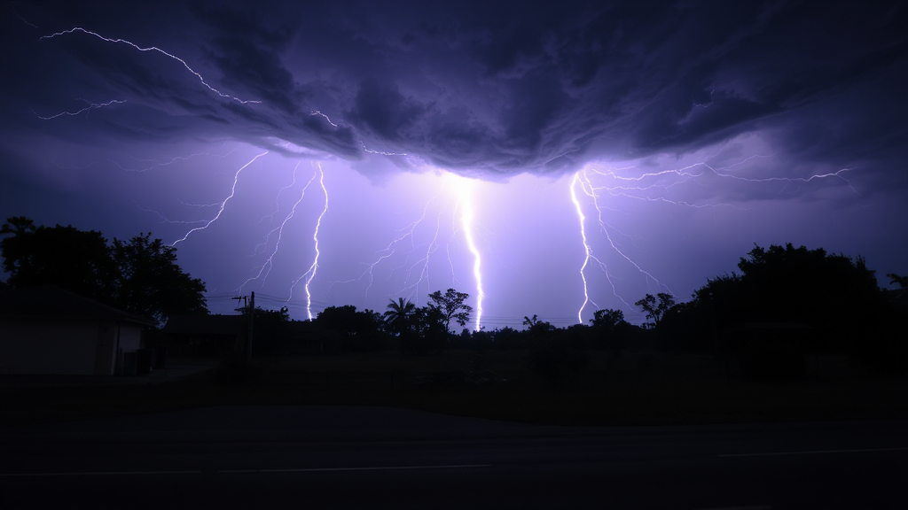
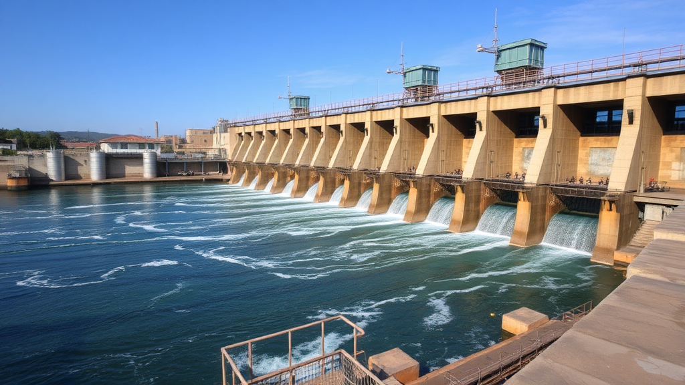

Weather and Climate
Weather refers to the short-term atmospheric conditions in a specific area, while climate is the long-term average of weather patterns
over extended periods. Understanding the difference between weather and climate
is crucial in addressing the impacts of climate change, especially in the context of Sustainable Development Goal 13: Climate Action.
Understanding Weather Patterns
Weather patterns are influenced by several factors, including:
- Temperature: A measure of how hot or cold the atmosphere is.
- Humidity: The amount of moisture in the air, affecting cloud formation and precipitation.
- Wind: Air movement that can transport heat and moisture across regions.
- Precipitation: Any form of water, liquid or solid, that falls from clouds, impacting water availability and agriculture.
Climate Change and Weather Extremes
Climate change has led to significant shifts in weather patterns, resulting in more extreme weather events:
- Heatwaves: Increased frequency and intensity of heatwaves can lead to health crises and energy shortages.
- Storms: More severe storms and hurricanes are becoming common due to rising ocean temperatures.
- Droughts: Changing rainfall patterns result in prolonged droughts, affecting water supplies and agriculture.
- Flooding: Increased rainfall and rising sea levels contribute to more frequent flooding in coastal regions.
Impact of Climate Change on Weather and Climate
The Intergovernmental Panel on Climate Change (IPCC) reports that:
- The global average temperature has risen by approximately 1.2°C since the late 19th century.
- Rising sea levels threaten low-lying coastal areas, with projections estimating a rise of up to 1 meter by 2100.
- Climate change could force over 200 million people to migrate by 2050 due to uninhabitable conditions.
Solutions and Actions for Climate Action
To mitigate the impacts of climate change, we can take the following actions:
- Investing in renewable energy sources like solar, wind, and hydropower.
- Improving energy efficiency in buildings and transportation.
- Implementing sustainable agricultural practices to reduce carbon emissions.
- Encouraging afforestation and reforestation to absorb CO₂.
Reflective questions:
- 1. How does my daily energy consumption contribute to climate change, and what steps can I take to reduce it?
- 2. What role does deforestation play in climate change, and what can I do to support forest conservation?
- 3. What everyday habits contribute to water waste, and how can I reduce my water footprint?
- 4. How can I reduce my transportation-related carbon emissions?
- 5. How prepared is my community for extreme weather events like floods, heatwaves, and storms?
Personal and Community Challenges:
- 1. Conduct an energy audit in your home. Identify areas where you can improve energy efficiency by using energy-saving light bulbs, insulating windows, or unplugging unused electronics.
- 2. Participate in a tree-planting event or contribute to organizations that are reforesting areas affected by deforestation. Reflect on the long-term benefits of increasing green spaces.
- 3. Challenge yourself to reduce your daily water use by 10%. Implement strategies like taking shorter showers, using rainwater for plants, or fixing leaks.
- 4. Develop a sustainable transportation plan that reduces car use. Commit to using public transport, cycling, or walking for one week, and track the difference in your carbon emissions.
- 5. Organize or participate in a community event focused on preparing for extreme weather events like flooding or heatwaves. Help create emergency kits and raise awareness in your neighborhood.
Community and Global Engagement Challenges::
- 1. Create or join a local climate action group that advocates for policies aligned with SDG 13. Host workshops or campaigns to educate others on the importance of renewable energy and reducing emissions.
- 2. Research local businesses and their sustainability practices. Write letters or start a campaign encouraging them to reduce their carbon footprint and adopt more eco-friendly practices.
- 3. Initiate a "Green Team" at your school or workplace to promote energy efficiency, reduce waste, and encourage eco-friendly practices like carpooling or reducing paper use.
- 4. Organize a climate action event or workshop in your community or school to raise awareness about SDG 13 and how individuals can make a difference.
- 5. Work with your family, friends, or community group to calculate and collectively reduce your carbon footprints by setting achievable targets, such as reducing energy use or cutting down on car travel
Interactive Quiz
Test your knowledge about weather, climate, and climate action!